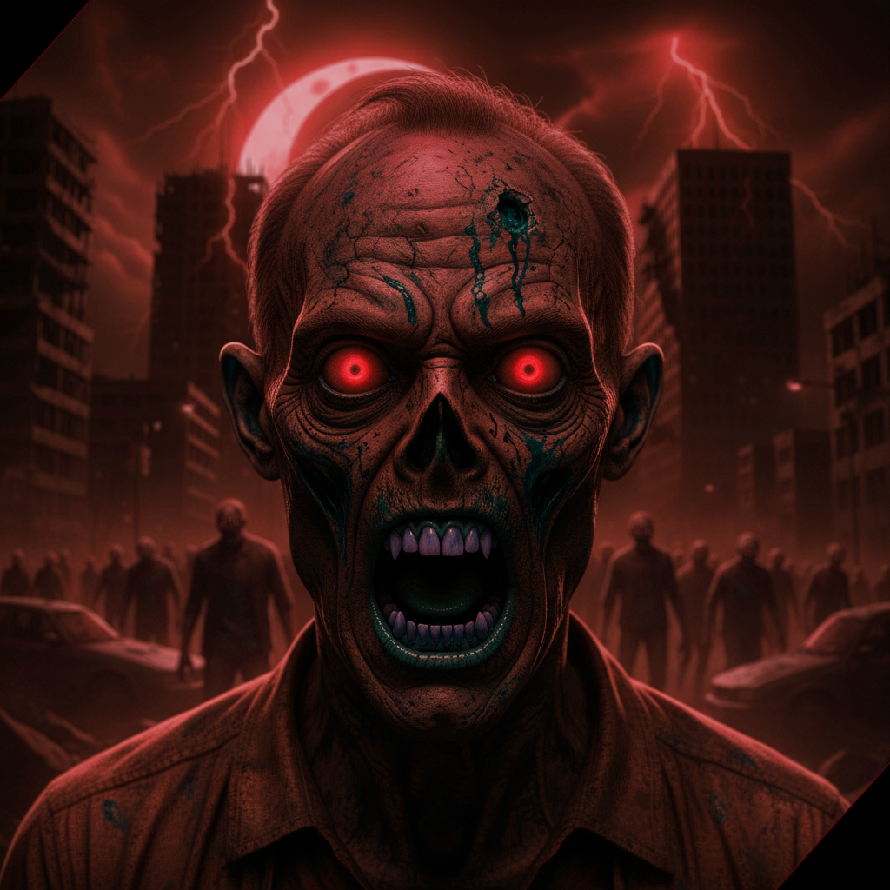

ZOMVIE Review is a horror movie review website dedicated to the world of zombie films. Our platform exists to guide viewers through the ever-growing collection of zombie movies by offering honest reviews, clear ratings, and thoughtful descriptions. We believe that every zombie movie has its own story to tell, whether it focuses on survival, fear, action, or the emotional impact of a collapsing world.
Our website highlights what makes each zombie movie unique. We analyze the quality of the story, the design and behavior of the zombies, the atmosphere, and the overall entertainment value. Each movie is given a rating to help viewers easily decide which films are worth watching and which ones may be skipped. Through this, we aim to answer one of the most common questions among horror fans: which zombie movie is truly the best?

This website is for both longtime fans of zombie movies and those who are new to the genre. We feature both classic and modern zombie films to help viewers discover new favorites and understand why certain movies stand out.
More than just ratings, Zombie Reviews is a community for fans of the undead. It is a place where viewers can discover new movies, revisit iconic titles, and appreciate how zombie films reflect fear, survival, and human nature. As the genre continues to evolve, our goal is to keep viewers informed, entertained, and ready for the next outbreak.
The walking and living dead, or zombies, have gained popularity in contemporary society. What were these creatures like when they were young, and what is their history? DO they actually exist, or are they merely a myth?
Zombies have a historical presence that spans centuries, rooted in ancient myths and folklore. The belief in zombies, particulary within Haitian culture, is tied to voodoo practices where priests were thought resurrect the dead. The term "Zombie" derives from the West African "nzambi" translating to "god" or "spirit of a deceased person", introduced to the Americas via the slave trade.
Zombies have been a prominent theme in pop culture, evolving from Romero's original film representations to the modern hit television series, The walking Dead. Typically depicted as mindless, flesh-eating beings, these creatures serve as metaphors for human-nature, survival instincts, and the disintegration of society. This enduring fascination has given rise to the subgenre known as "zomvie fiction", which includes influential works such as Max Brook's World War Z and the classic film of Dawn of the Dead. These narratives have broadened the genre's appeal, attracting audiences beyong horror fans. Moreover, zombies have permeated various media, including video games, graphic novels, and comedies, showcasing their versatility and enduring popularity in different storytelling formats.